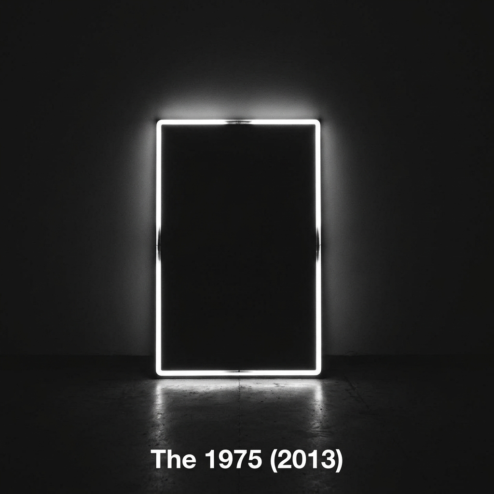
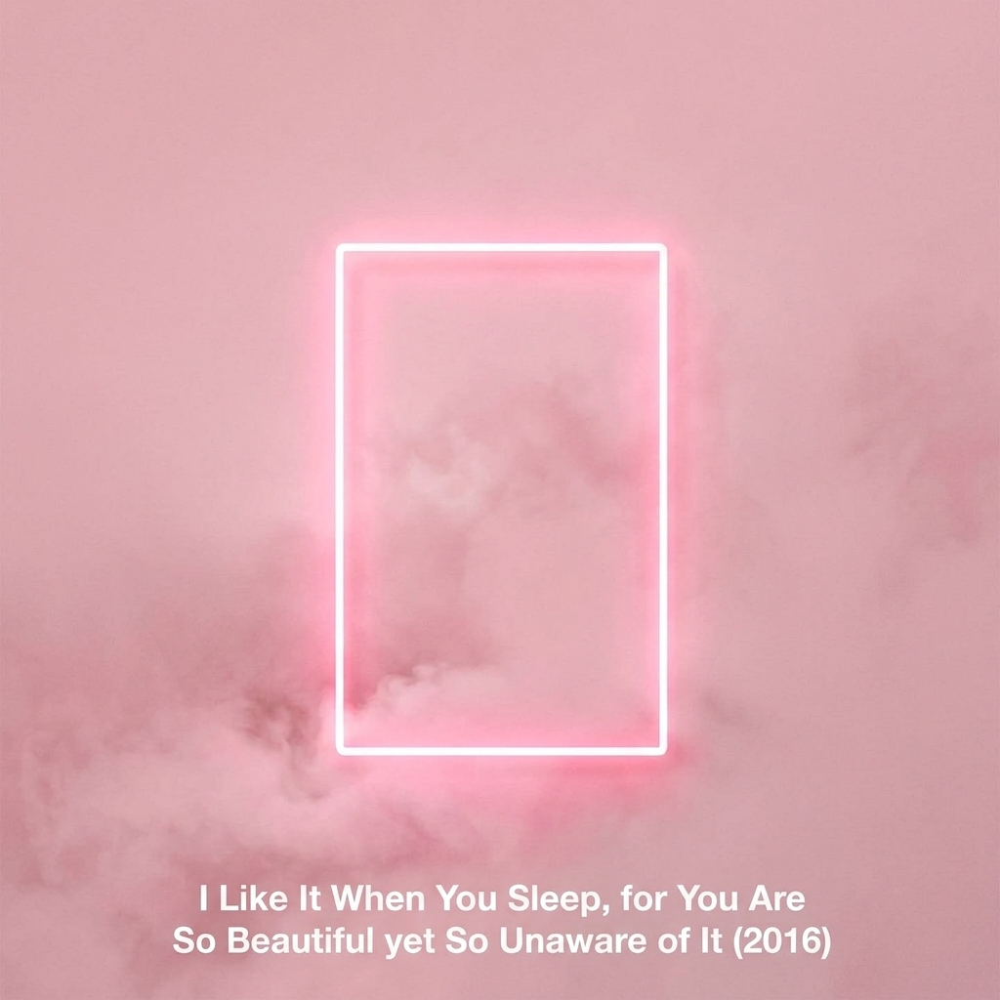
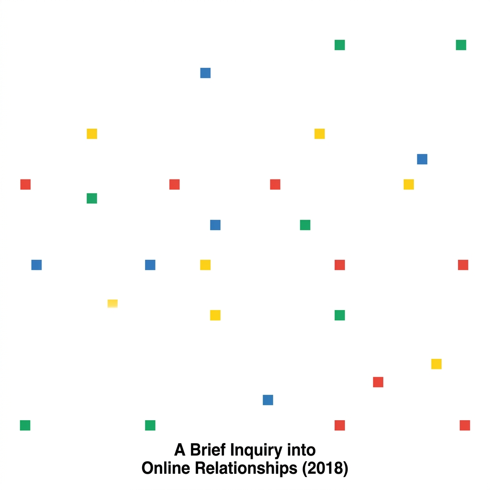
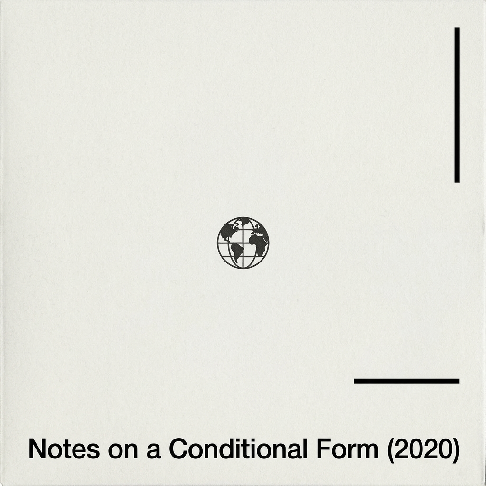
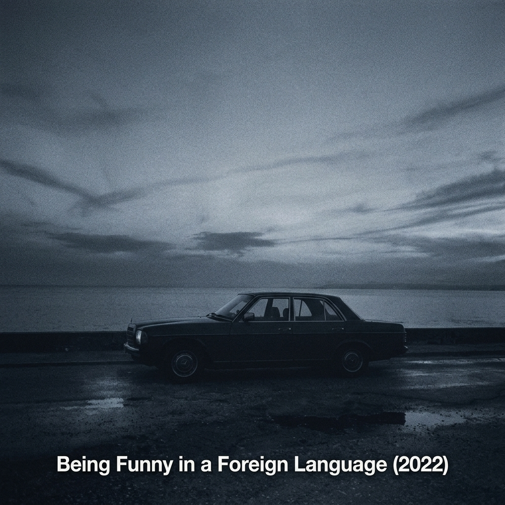

Dibentuk di Wilmslow, Inggris oleh Matty Healy, Adam Hann, Ross MacDonald, dan George Daniel, The 1975dikenal sebagai band yang gemar meruntuhkan batas-batas genre. Musik mereka memadukan kilau *synth-pop* ala tahun 1980-an dengan denyut *indie rock*, *pop rock*, hingga sentuhan R&B dan balada bernuansa jazz Di balik melodi yang kerap terdengar cerah dan mudah diikuti, terselip lirik-lirik yang puitis, sarkastik, sekaligus rapuh—layaknya catatan harian yang berubah menjadi lagu.
Bagi pendengar Gen Z yang tumbuh di tengah riuhnya era digital, karya-karya terasa seperti cermin yang jujur. Lewat album seperti mereka menangkap kegelisahan anak muda tentang kesepian di balik layar, pencarian jati diri, hingga rapuhnya hubungan modern tanpa terdengar menggurui. Perpaduan estetika visual yang ikonik dan kejujuran emosional inilah yang membuat musik mereka menjadi pelarian sekaligus ruang aman bagi generasi muda untuk merasa dipahami.
Spotify Followers
Monthly Listeners
Official Albums
Discography

i like it when you sleep, for you are so beautiful yet so unaware of it (Full Albums)

A Brief Inquiry into Online Relationships (Full Albums)

not a conditional form (Full Albums)
